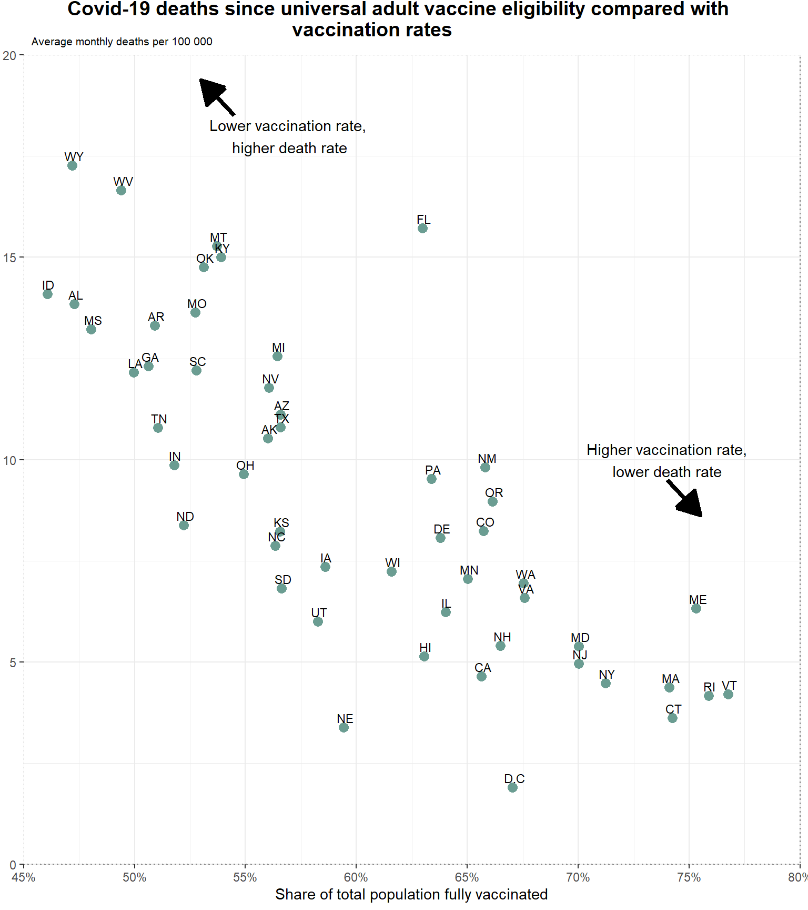
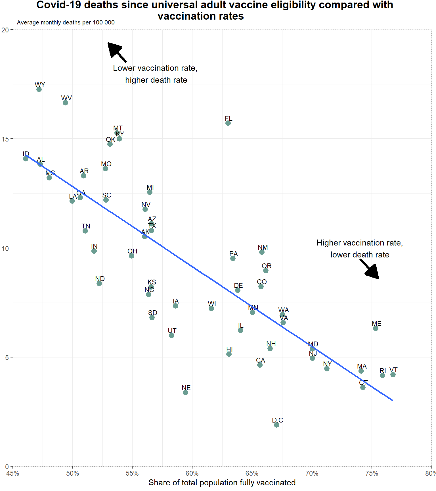

Assignment_3
Source code for this page
Assignment 3: Reading json data from a web page
On the website of the New York Times: https://www.nytimes.com/interactive/2021/12/28/us/covid-deaths.html?referrer=masthead
We find a figure showing the relationship between vaccination rates and the number of deaths from COVID-19 in the various states in the US.
Task 1

Task 2
Call:
lm(formula = deaths_per_100k ~ fully_vaccinated_pct_of_pop, data = df)
Residuals:
Min 1Q Median 3Q Max
-5.9688 -1.4000 -0.0834 1.1955 7.6635
Coefficients:
Estimate Std. Error t value Pr(>|t|)
(Intercept) 31.149 2.531 12.305 < 2e-16 ***
fully_vaccinated_pct_of_pop -36.663 4.183 -8.764 1.33e-11 ***
---
Signif. codes: 0 '***' 0.001 '**' 0.01 '*' 0.05 '.' 0.1 ' ' 1
Residual standard error: 2.49 on 49 degrees of freedom
Multiple R-squared: 0.6105, Adjusted R-squared: 0.6026
F-statistic: 76.81 on 1 and 49 DF, p-value: 1.328e-11This gives us a coefficient that shows us that it estimates a -36.663 per per x, value this tells us that there would be 36.663 less in deaths per 100 000 for every 1% increase in vaccine coverage.

Extra:
Finally i made this using plotly.
Source: New York Times database of reports from state and local health agencies, Centers for Disease Control and Prevention • Notes: Chart shows deaths reported since universal vaccine eligibility on April 19, 2021. Vaccination rate is the percentage of the total population fully vaccinated as of Dec. 20, 2021.